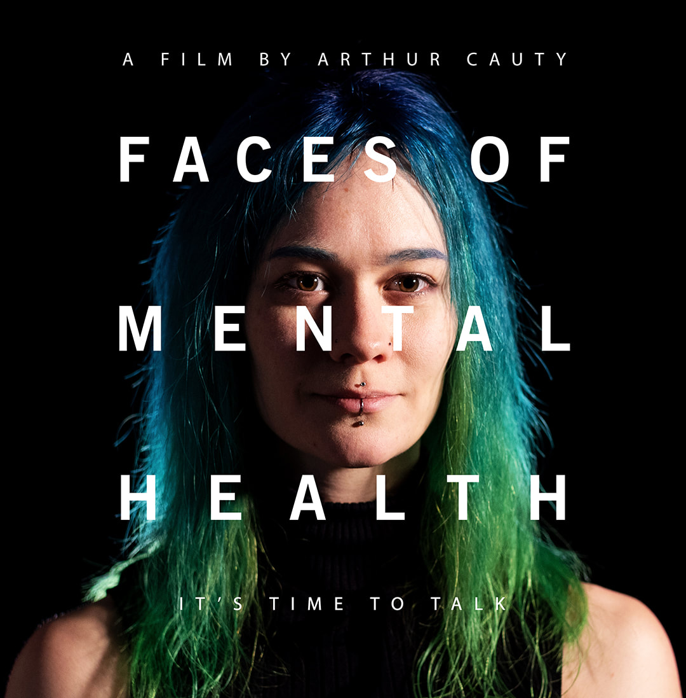

Mens minds matter
Arthur Cauty new short film - Faces of Mental Health
June 1, 2019
Since losing somebody myself to suicide, I’ve experienced the stigma around suicide and mental health up close. And only through talking about my loss did I uncover just how common suicide, depression and mental health issues are. It seemed like everyone I spoke to suffered from something, or had lost a friend or relative, yet it’s still so heavily stigmatised. Even the way in which we talk about it enforces taboo - we use the phrase ‘commit suicide’ which carries connotations of criminality, and we frequently hear about celebrities ‘coming out’ about depression or anxiety, suggesting that these are things that are shameful and should be hidden. I often find the way in which suicide and mental health are portrayed in the media frustrating. It’s typically very sensationalist, and also insensitive and irresponsible - stirring up gossip or publishing grizzly details about deaths. I think we need to talk about suicide and mental health, but talk about in a considerate and safe way with an understanding that media coverage of suicide has been linked to increases in suicidal behaviour. Faces of Mental Health is my response to the stigma and the media. I wanted to create a film where people could just open up and speak in a comfortable environment. I specifically wanted to refrain from narration, foreboding music or ominous cutaways which are synonymous with films of this nature, and keep it short and (sweet probably isn’t the right word) simple. Raw. I didn’t want to detract from what these people were saying. I wanted them to speak, and for us to listen. It came to be a film about students, having read about the high number of student suicides in the country in recent years. It came to be a film about students in Bristol, having lived in the city myself for the past 6 years and learned of the high number of student suicides here. Again - it’s had a lot of media coverage. I decided to hone in on this niche and perhaps shed a little light on what’s going on for the young people in our universities. But the message the film promotes is universal and can be applied to any community the World over. It’s encouraging to see that there is a growing conversation about mental health now, particularly within the younger generations. I think we are beginning to chip away at the stigma, and start to create an environment of support and acceptance where people feel able to share. Faces of Mental Health is my contribution to this conversation. If it can help even one person to step forward and speak out, or encourage someone to listen or be more mindful of what others are going through, then I’d feel it’s a job well done.
Watch the film free on Vimeo:click here and please feel free to share.
Read the BBC report. click here
Faces of Mental Health has been selected for TMFF The Monthly Film Festival. Vote for the film to win. click here
For filmmaker Arthur Cauty’s website.click here